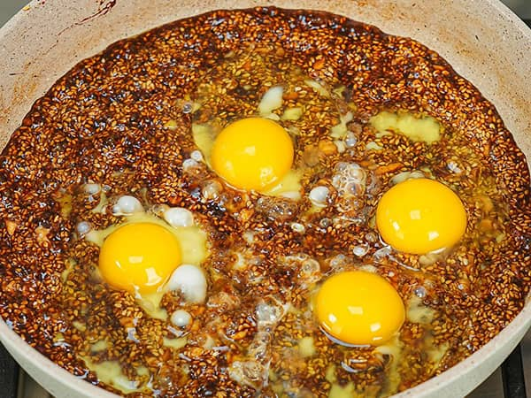

دستور پخت دوشاب یومورتا

دوشاب یومورتا یک غذای سنتی ایرانی است که از ترکیب دوشاب (شیره انگور) و تخم مرغ تهیه میشود
.این غذا معمولاً به عنوان یک صبحانه یا میان وعده مصرف میشود و طعمی شیرین و خوشمزه دارد
مواد لازم:
- شیره انگور (دوشاب)
- تخم مرغ
- روغن حیوانی
- کنجد
- دارچین
- مغز گردوی خرد شده
مراحل پخت:
- روغن حیوانی یا کره را بریزید گرم شود
- دوشاب را اضافه کنید وروی حرارت ملایم کمی تفت دهید
- سپس کنجد و گردو هارا اضافه کنید و کمی تفت دهید
- در نهایت تخم مرغ ها را اضافه کنید و هم بزنید تا بپزد
- میتوانید روی آن دارچین بریزید و همراه با سرشیر میل بفرمایید
بازگشت به صفحه اصلی